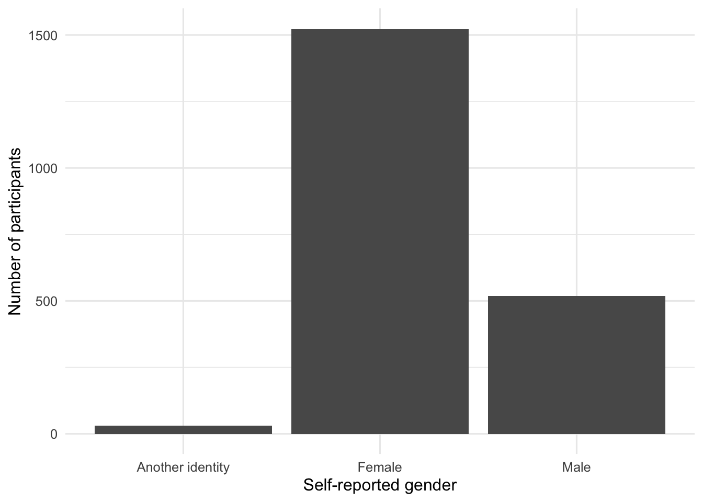

source("scripts/_setup.R")Chapter 1: Introduction
Meet the EAMMi2 data and begin working in R
Inspect a real dataset, identify variable types, and create a first reproducible summary and graph.
Chapter 1 of Exploring Statistics introduces the field and the language used to describe data. This chapter adds a practical question: How can R help us examine the people and variables in the EAMMi2 dataset?
If this is your first time using R, begin with Choose Your Path. The Start Here pages explain how to install the software, download the starter files, open the RStudio project, and run your first script.
Learning Goals
By the end of this chapter, you should be able to:
- inspect observations, variables, variable names, and variable types;
- distinguish statistical variable types from the way R represents them;
- give numeric category codes readable labels;
- create a frequency table and bar chart; and
- describe what the table and graph show.
TipLearning tip
Focus on reading and running code. You do not need to memorize every function. Your goal is to understand that an analysis is a sequence of instructions you can save, check, and run again.
Research Question
What does the reduced EAMMi2 dataset contain, and what does it tell us about participants’ self-reported gender?
Get Ready
This chapter uses scripts/01-introduction.R in the starter files.
Open the Chapter 1 script
- Open
exploring-statistics-r.Rproj. - In the Output pane, select the Files tab.
- Open the
scriptsfolder. - Open
01-introduction.R. - Place your cursor on the first line of code and select Run. Continue running one line or complete expression at a time as you follow this chapter.
The script begins by running the shared setup file. This opens the EAMMi2 dataset and loads the R tools used in the workbook.
After setup runs, eammi refers to the EAMMi2 data frame. You will see this object throughout the workbook.
Predict
Before running the next section of the script, answer these questions:
- What does one observation in this dataset represent?
- What does one variable represent?
- Do you expect the dataset to contain more observations or more variables?
You are not expected to know the exact numbers yet. A prediction gives you something to compare with the output.
Run The Analysis
Inspect The Dataset
The functions below reveal the dataset’s dimensions and variable names.
dim(eammi)[1] 2073 39names(eammi) [1] "Duration" "Finished" "FinanciallyInd"
[4] "NoLongerHome" "MOA_ACH" "Adult"
[7] "Exploration" "Negativity" "Identity"
[10] "BetweenStages" "Politics" "PoliticsDichotomous"
[13] "Party" "PartyDichotomous" "SWLS"
[16] "Mindfulness" "Belonging" "SelfEfficacy"
[19] "SupportFriends" "SupportFamily" "SupportSpecial"
[22] "SocialSupport" "SMmaintain" "SMnewconnect"
[25] "SMinformation" "SMtotal" "USdream1"
[28] "USdream2" "Conflict" "Symptoms"
[31] "Stress" "IMPmarriage" "IMPparenting"
[34] "IMPcareer" "IMPhobbies" "Gender"
[37] "Age" "Race" "Disability" dim() reports observations first and variables second. In this dataset, each observation represents a participant and each variable represents something measured about that participant. names(eammi) lists the names of all variables in the data frame.
The next two functions request the same dimensions separately.
nrow(eammi)[1] 2073ncol(eammi)[1] 39Investigate The Code
Each line follows the same basic pattern: the function name comes first, and the object the function works on appears inside parentheses.
| Code | Question it asks R |
|---|---|
dim(eammi) |
What are the dimensions of this data frame? |
names(eammi) |
What are the variable names? |
nrow(eammi) |
How many observations are there? |
ncol(eammi) |
How many variables are there? |
The output should agree across the two approaches. If dim(eammi) begins with 2,073, then nrow(eammi) should also return 2,073.
Understand Variable Types
The textbook distinguishes categorical and quantitative variables, then describes their scales of measurement. R also records how each variable is represented. These ideas overlap, but they are not identical. A variable can be stored as numbers even when those numbers represent categories.
| Statistical variable type | Common R representation | Example |
|---|---|---|
| Quantitative | numeric or integer | Age, Stress, SWLS |
| Nominal categorical | factor | Gender, Race, Disability |
| Ordinal categorical | ordered factor | Adult, NoLongerHome |
R can store labeled categories as factors:
- a factor represents categories without a required progression; and
- an ordered factor represents categories with a meaningful order, such as
No,Maybe,Yes.
Gender begins as the numeric codes 1, 2, and 3. The next step gives those codes readable category names. We retrieved the meaning of each code from the Gender entry in the EAMMi2 codebook.
eammi <- eammi |>
mutate(
Gender = factor(
Gender,
levels = c(3, 2, 1),
labels = c("Another identity", "Female", "Male")
)
)
levels(eammi$Gender)[1] "Another identity" "Female" "Male" Investigate The Code
mutate()changes or creates a variable inside a data frame.factor()tells R thatGendershould be treated as categorical.levelsgives the original numeric codes.labelsgives the category names that should be displayed.$selects one variable from a data frame;eammi$Gendermeans theGendervariable insideeammi.levels(eammi$Gender)shows the labels R now uses for the variable.
The pipe |> passes the result on its left into the function on its right. Read it as “and then.” The code starts with eammi, and then changes Gender into a labeled factor.
The order of factor levels controls the order R uses in tables and graphs. The order in which we write the levels is important. When a variable is ordinal, use a meaningful order. When a variable is nominal and has no meaningful order, alphabetical order is a useful default because it reduces the chance that presentation order will suggest an unsupported ranking.
Create A Frequency Table
Before running the code, predict which gender category will have the highest frequency in this sample.
gender_summary <- eammi |>
count(Gender, name = "Frequency") |>
mutate(Percent = round(100 * Frequency / sum(Frequency), 1))
gender_summary# A tibble: 3 × 3
Gender Frequency Percent
<fct> <int> <dbl>
1 Another identity 30 1.4
2 Female 1524 73.5
3 Male 519 25 count() creates a frequency table. R then works like a flexible calculator: it divides each frequency by the total frequency, multiplies by 100, and rounds to one decimal place. mutate() creates the new Percent variable inside the summary table.
Create A Bar Chart
The same information can be represented visually.
ggplot(gender_summary, aes(x = Gender, y = Frequency)) +
geom_col() +
labs(
x = "Self-reported gender",
y = "Number of participants"
)
Investigate The Code
Every graph in ggplot2 follows a repeated structure:
ggplot(gender_summary, ...)names the data or summary object.aes(x = Gender, y = Frequency)maps variables to positions on the graph.geom_col()requests bars whose heights come from the frequency table.labs()adds readable axis labels.
The table supplies exact values; the graph makes the distribution easy to compare. Neither display replaces an interpretation in words.
Produce Your Interpretation
Write two or three sentences that answer the research question. Include:
- the total number of participants and variables in the reduced dataset;
- the most common gender category; and
- at least one frequency and one percentage from
gender_summary.
Practice
Exercise 1: Classify Variables
Classify each variable as primarily quantitative, nominal categorical, or ordinal categorical: Duration, NoLongerHome, Adult, PoliticsDichotomous, SWLS, Belonging, Gender, and Age.
Exercise 2: Compare Dataset Views
Run the following code:
glimpse(eammi)Rows: 2,073
Columns: 39
$ Duration <dbl> 30.65000, 24.45000, 36.41667, 20.48333, 34.46667, …
$ Finished <dbl> 1, 1, 0, 1, 1, 0, 0, 0, 1, 1, 1, 1, 1, 1, 0, 1, 1,…
$ FinanciallyInd <dbl> 2, 1, 2, 2, 1, 1, 2, 1, 1, 1, 1, 1, 2, 1, 1, 2, 2,…
$ NoLongerHome <dbl> 1, 1, 1, 1, 1, 1, 2, 1, 2, 1, 2, 1, 1, 1, 1, 1, 1,…
$ MOA_ACH <dbl> 38, 33, 33, 47, 27, 34, 39, 34, 31, 29, 36, 33, 37…
$ Adult <dbl> 1, 1, 1, 1, 1, 1, 1, 2, 1, 1, 1, 1, 1, 1, 1, 2, 1,…
$ Exploration <dbl> 3.5, 4.0, 4.0, 4.0, 3.5, 3.5, 3.5, 3.5, 4.0, 2.0, …
$ Negativity <dbl> 3.5, 4.0, 4.0, 3.5, 3.0, 4.0, 3.5, 3.0, 4.0, 4.0, …
$ Identity <dbl> 4.0, 3.5, 4.0, 3.0, 4.0, 3.5, 2.5, 4.0, 4.0, 2.0, …
$ BetweenStages <dbl> 4.0, 4.0, 3.0, 3.5, 2.5, 3.0, 2.5, 4.0, 3.0, 3.0, …
$ Politics <dbl> 2, 1, 2, 1, 8, 4, 2, 3, 5, 1, 8, 2, 8, 6, 1, 3, 2,…
$ PoliticsDichotomous <dbl> 1, 1, 1, 1, NA, NA, 1, 1, 2, 1, NA, 1, NA, 2, 1, 1…
$ Party <dbl> 3, 4, 8, 8, 8, 4, 1, 8, 2, 4, 8, 4, 8, 2, 2, 3, 2,…
$ PartyDichotomous <dbl> 1, NA, NA, NA, NA, NA, 1, NA, 1, NA, NA, NA, NA, 1…
$ SWLS <dbl> 23, 21, 9, 17, 20, 18, 27, 25, 12, 32, 23, 14, 29,…
$ Mindfulness <dbl> 2.400000, 1.800000, 2.200000, 3.200000, 3.400000, …
$ Belonging <dbl> 4, 4, 2, 4, 3, 4, 4, 4, 5, 1, 3, 5, 4, 5, 2, 4, 5,…
$ SelfEfficacy <dbl> 34, 34, 22, 30, 24, 23, 30, 33, 30, 31, 24, 36, 29…
$ SupportFriends <dbl> 6.75, 6.50, 5.50, 6.25, 1.75, 4.50, 7.00, 5.75, 6.…
$ SupportFamily <dbl> 6.0, 6.6, 4.0, 5.8, 4.2, 3.6, 5.2, 6.2, 5.8, 3.8, …
$ SupportSpecial <dbl> 5.25, 7.00, 6.25, 6.00, 7.00, 7.00, 6.50, 5.75, 5.…
$ SocialSupport <dbl> 72, 81, 62, 72, 54, 60, 73, 72, 72, 32, 72, 47, 54…
$ SMmaintain <dbl> 3.8, 2.4, 3.0, 3.0, 1.2, 2.8, 4.4, 3.8, 2.6, 3.0, …
$ SMnewconnect <dbl> 4.75, 1.25, 3.25, 3.50, 1.25, 3.25, 3.25, 3.25, 2.…
$ SMinformation <dbl> 4.5, 3.0, 3.0, 4.0, 1.0, 5.0, 4.0, 1.5, 2.0, 5.0, …
$ SMtotal <dbl> 47, 23, 34, 37, 13, 37, 43, 35, 27, 37, 40, 39, 26…
$ USdream1 <dbl> 4, 4, 2, 3, 1, 4, 2, 1, 4, 5, 1, 2, 3, 2, 3, 1, 3,…
$ USdream2 <dbl> 4, 4, 2, 4, 1, 3, 4, 2, 4, 4, 1, 3, 4, 2, 2, 1, 3,…
$ Conflict <dbl> 3, 4, 6, 4, 2, 1, 5, 2, 2, 5, 2, 3, 3, 2, 2, 2, 2,…
$ Symptoms <dbl> 24, 24, 27, 16, 24, 25, 20, 25, 19, 22, 16, 18, 35…
$ Stress <dbl> 33, 36, 33, 35, 29, 32, 30, 35, 33, 38, 29, 32, 38…
$ IMPmarriage <dbl> 10, 10, 1, 25, 13, 70, 15, 10, 25, 0, 2, 13, 0, 40…
$ IMPparenting <dbl> 25, 25, 1, 25, 33, 70, 25, 20, 25, 0, 28, 60, 0, 1…
$ IMPcareer <dbl> 30, 35, 59, 25, 21, 90, 40, 20, 25, 70, 40, 13, 50…
$ IMPhobbies <dbl> 35, 30, 39, 25, 33, 90, 20, 50, 25, 30, 30, 13, 50…
$ Gender <fct> Female, Male, Male, Male, Female, Female, Female, …
$ Age <dbl> 20, 23, 23, 18, 23, 25, 22, 21, 25, 22, 23, 19, 25…
$ Race <dbl> 1, 1, 1, 1, 1, 1, 1, 1, 1, 1, 1, 1, 1, 1, 1, 1, 1,…
$ Disability <dbl> 2, 2, 2, 2, 2, 2, 2, 2, 2, 2, 2, 2, 2, 2, 2, 2, 2,…summary(eammi$Age) Min. 1st Qu. Median Mean 3rd Qu. Max.
18.00 19.00 20.00 20.24 21.00 29.00 In one or two sentences, explain the difference between the information returned by these functions. Remember that the abbreviations in glimpse() describe how R stores each variable; they do not determine its statistical role.
Challenge: Create An Ordered Factor
Begin by modifying the frequency-table analysis:
- Copy the code that creates
gender_summary. - Give the new object a descriptive name, such as
adult_summary. - Replace
GenderwithAdult. - Run the code and examine the numeric category codes.
Adult still contains numeric category codes. Use the Adult entry in Understanding EAMMi2 to identify what those codes mean.
Next, adapt the Gender factor code to convert Adult into an ordered factor. Then create a new frequency table and explain why the order of the factor levels matters. Try completing these steps before checking the code below.
Check Your Work
Dataset Dimensions
nrow(eammi) returns 2,073, the number of participants. ncol(eammi) returns 39, the number of variables retained in the reduced teaching dataset.
Sample Interpretation
The reduced EAMMi2 dataset contains 2,073 participants and 39 variables. A majority of participants identified as female (73.5%, or n = 1,524), followed by 519 participants who identified as male (25.0%) and 30 participants who identified as another gender (1.4%).
Exercise 1
- Quantitative:
Duration,SWLS,Belonging,Age - Nominal categorical:
PoliticsDichotomous,Gender - Ordinal categorical:
NoLongerHome,Adult
Reasonable disagreements about treating bounded rating-scale variables as ordinal or quantitative are worth discussing. In this workbook, scale scores such as SWLS and Belonging are generally analyzed as quantitative.
Exercise 2
glimpse() provides a compact overview of the entire data frame, including each column’s R representation and example values. summary(eammi$Age) focuses on one variable and returns its minimum, quartiles, median, mean, maximum, and missing-value count when applicable.
Challenge
eammi <- eammi |>
mutate(
Adult = factor(
Adult,
levels = c(3, 2, 1),
labels = c("No", "Maybe", "Yes"),
ordered = TRUE
)
)
count(eammi, Adult)The order tells R how the categories progress conceptually. It also controls their default order in tables and graphs.
Chapter Takeaway
A reproducible R analysis begins with a sequence you can save and rerun: load the data, inspect the variables, make their statistical roles explicit, summarize, graph, and interpret. Every later chapter builds on this sequence.
In this chapter, we focused on these R commands and code patterns:
source()runs the shared setup script.dim(),nrow(), andncol()report dataset dimensions.names()lists variable names.factor()gives categorical codes readable labels and an order.levels()shows the labels for a factor.count()creates a frequency table.mutate()changes or creates variables.ggplot()starts a graph and names its data.aes()maps variables to visual positions.geom_col()creates bars from values already stored in a table.labs()adds readable labels.